CS184/284A Spring 2025 Homework 2 Write-Up
Link to webpage: https://innoka-uka.github.io/cs184-sp26-hw-webpages-hw-webpage/
Link to GitHub repository: https://github.com/cal-cs184-student/hw2-meshedit-vmee50

Overview
In this homework, I implemented Bezier curves and surfaces using the de Casteljau algorithm, as well as several mesh manipulation operations using the Half-Edge data structure.
I learned how to evaluate polynomial curves using linear interpolation, how to generalize this to surfaces, and how to efficiently traverse and modify triangle mesh topology.
Section I: Bezier Curves and Surfaces
Part 1: Bezier curves with 1D de Casteljau subdivision
De Casteljau's algorithm is a recursive method for evaluating Bezier curves. It works by linearly interpolating between consecutive control points to find intermediate points, repeatedly reducing the set of points until only one point remains. This final point lies on the curve at parameter \(t\).
I implemented this in the evaluateStep function. It takes a vector of control points and performs one level of interpolation. For each pair of consecutive points \(P_i\) and \(P_{i+1}\), it calculates a new point \(P'_i = (1-t)P_i + tP_{i+1}\). The function returns the vector of these new points. By calling this function repeatedly (as seen in drawCurve), the algorithm converges to the final point on the Bezier curve.
I created a custom curve named bez/custom.bzc with 6 control points that form a wavy pattern.
Screenshot of the custom Bezier curve:
|
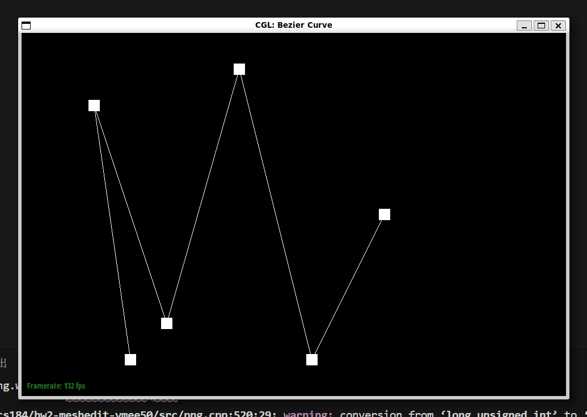 |
Screenshots of each step / level of the evaluation:
Press E to step through. Below are screenshots showing the evaluation process from the original control points down to the final point.
|
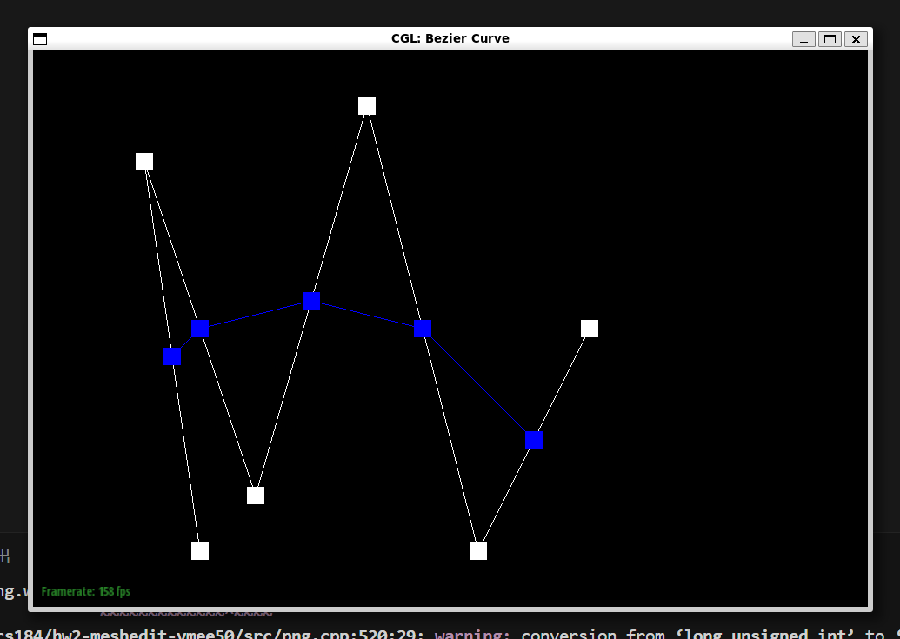 |
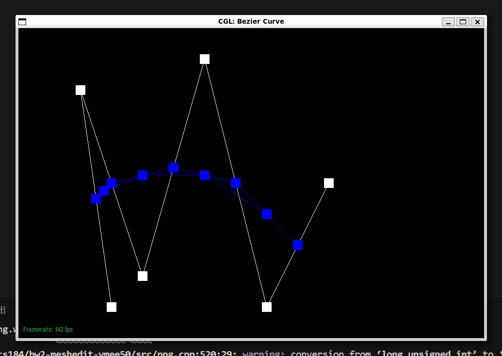 |
|
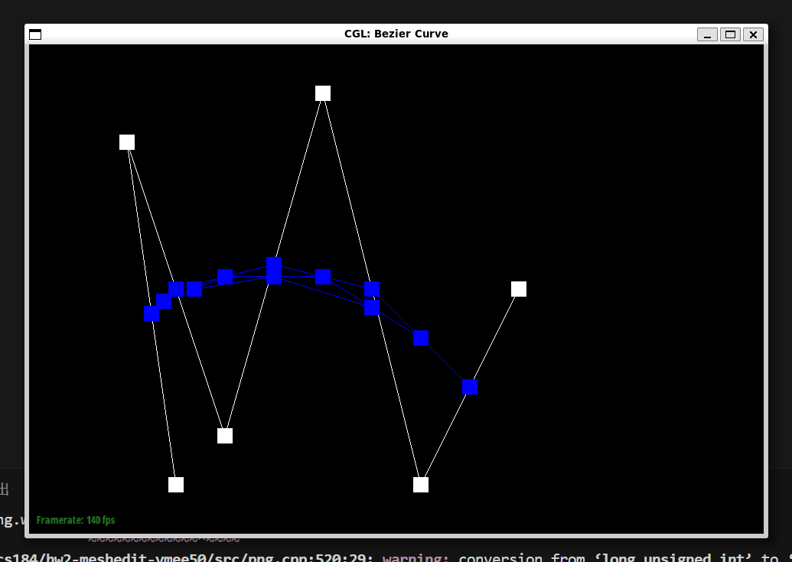 |
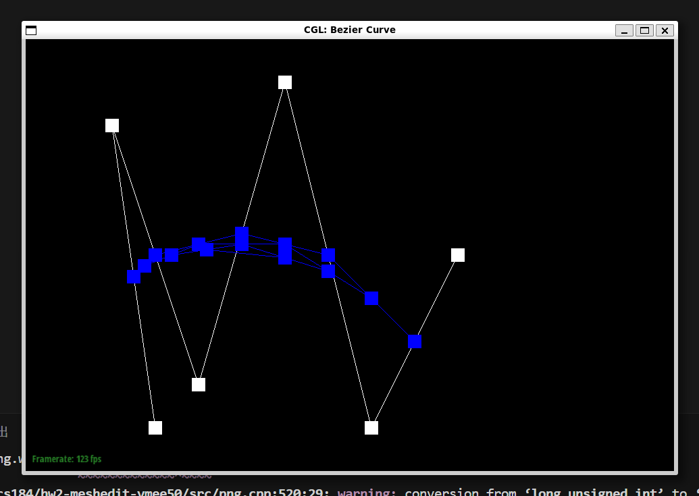 |
|
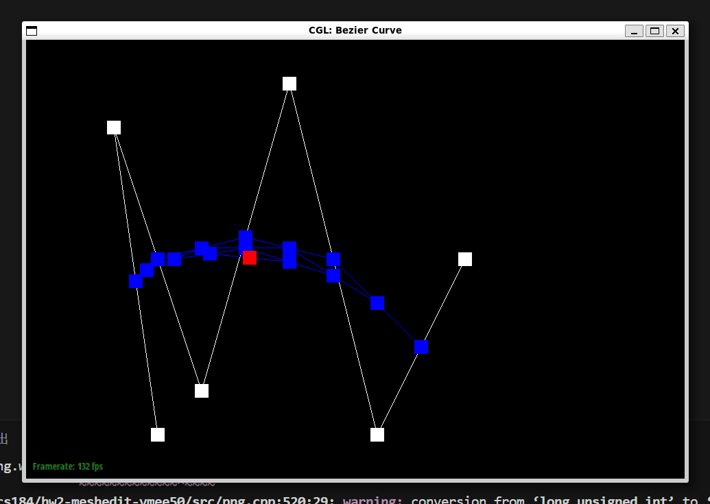 |
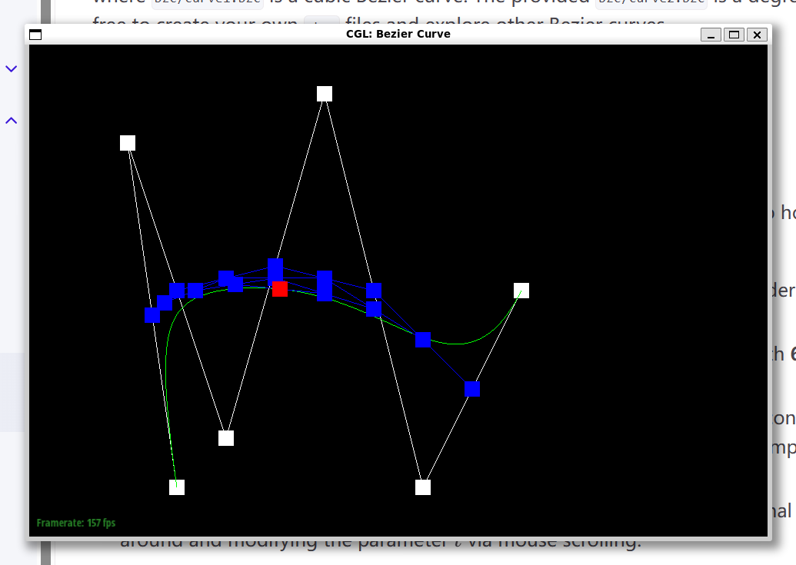 |
Screenshot of modified curve with different t:
I move the original control points around and modify the parameter \(t\) via mouse scrolling to see a slightly different Bezier curve.
|
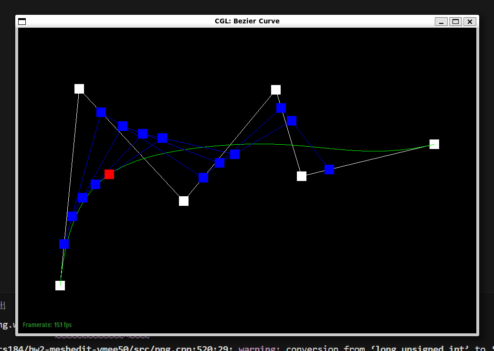 |
Part 2: Bezier surfaces with separable 1D de Casteljau
De Casteljau’s algorithm extends to Bézier surfaces by applying the 1D algorithm separably in two parametric directions (\(u\) and \(v\)).
For a Bézier surface defined by an \(n \times n\) grid of control points \(P_{i,j}\), I evaluate it in two stages:
- Fix u (row direction): For each row \(i\), we treat the \(n\) control points \(P_{i,0}, \dots, P_{i,n-1}\) as a 1D Bézier curve and apply the standard de Casteljau algorithm at parameter \(u\). This produces \(n\) intermediate points—one from each row.
- Fix v (column direction): We then treat these \(n\) intermediate points as control points of another 1D Bézier curve and apply de Casteljau again at parameter \(v\). The result is a single point on the Bézier surface at \((u, v)\).
In my implementation:
evaluateStepperforms one interpolation step between adjacent 3D control points.evaluate1Drepeatedly callsevaluateStepuntil only one point remains, fully evaluating a 1D Bézier curve at parameter \(t\).evaluate(u, v)first callsevaluate1Don each row using \(u\), collects the resulting intermediate points, and then callsevaluate1Dagain on those points using \(v\) to obtain the final surface point.
This separable approach directly generalizes the 1D de Casteljau algorithm to 2D Bézier surfaces.
Screenshot of Bezier Surface:
Here is a screenshot of the bez/teapot.bez file evaluated by my implementation.
|
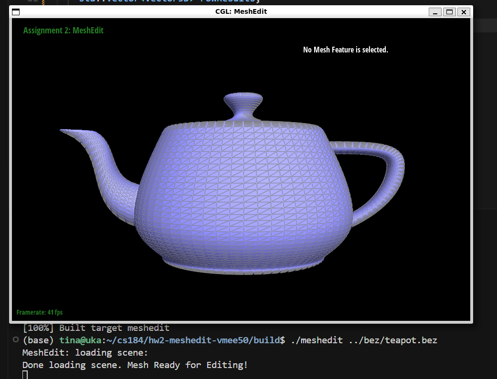 |
Section II: Triangle Meshes and Half-Edge Data Structure
Part 3: Area-weighted vertex normals
I implemented the vertex normal as an area-weighted average of the normals of all incident faces. For a given vertex, I loop over its one-ring faces using the halfedge structure; for each non-boundary face, I compute the face normal with a cross product of two edge vectors (which is automatically scaled by twice the triangle area). I then accumulate these unnormalized face normals into a single vector and finally normalize the sum to obtain a unit-length vertex normal.
Vector3D N(0, 0, 0);
HalfedgeCIter h = halfedge();
HalfedgeCIter h0 = h;
do {
FaceCIter f = h->face();
// ignore boundary faces
if (!f->isBoundary()) {
// positions of the three vertices of the triangle
Vector3D p0 = h->vertex()->position;
Vector3D p1 = h->next()->vertex()->position;
Vector3D p2 = h->next()->next()->vertex()->position;
// face normal (proportional to the area of the triangle)
Vector3D n = cross(p1 - p0, p2 - p0);
// area-weighted: just accumulate the unnormalized face normals
N += n;
}
// traverse around the vertex: h -> twin -> next
h = h->twin()->next();
} while (h != h0);
// finally normalize
if (N.norm() == 0) return N;
return N.unit();
Screenshots comparing shading:
Those are screenshots of dae/teapot.dae comparing teapot shading with and without vertex normals. Use Q to toggle default flat shading and Phong shading.
We can see clearly that vertex normals significantly smoothen the surface, making the shade transition between different triangles more natural.
|
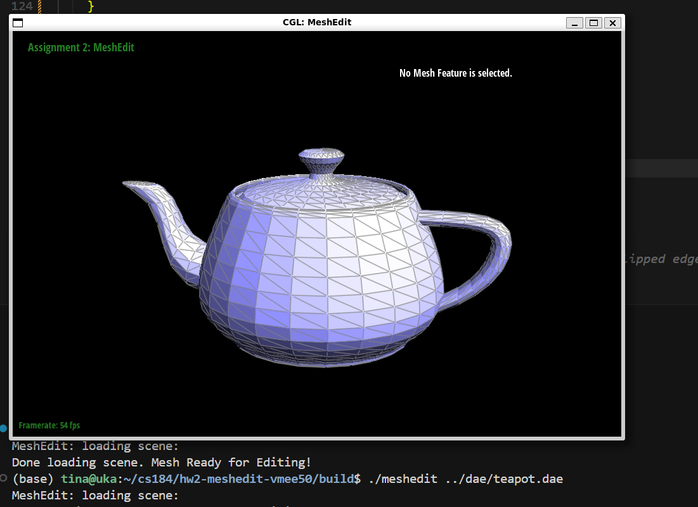 |
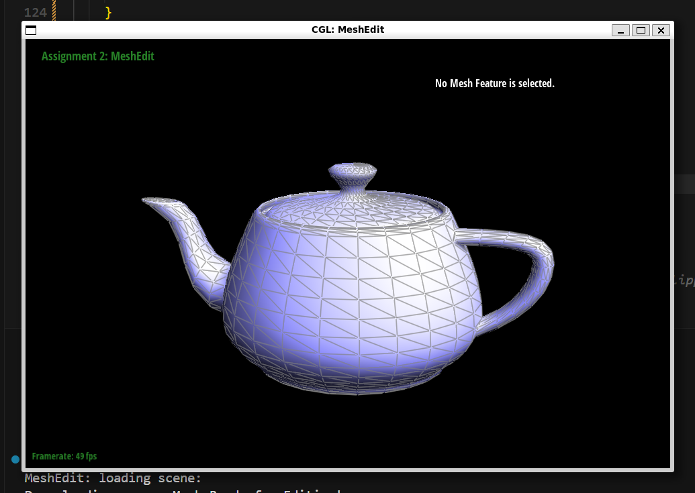 |
Part 4: Edge flip
I implemented the edge flip operation by carefully updating the pointers of the half-edges involved in the flip. The main challenge was correctly handling the connectivity between vertices, half-edges, faces, and edges to ensure the mesh remains valid (such as ensuring no duplicate edges or faces are created).
In my implementation:
- I first identified the two faces (triangles) sharing the edge, and all 6 half-edges involved (3 from each face).
- I checked if the edge is a boundary edge. If so, I returned immediately without flipping, as flipping a boundary edge is not supported/meaningful in this context.
- I used the
setNeighborsmethod to update thenextpointers of the half-edges to re-route the connections. Specifically, I swapped the connections so that the diagonal edge connects the other two vertices of the quadrilateral. - I updated the
halfedgepointers for the four vertices to point to one of the new incoming half-edges. - I updated the
halfedgepointers for the affected edges and faces.
One tricky part was ensuring that I correctly handled the "twin" half-edges and maintained the correct winding order (counter-clockwise) for the faces. Debugging involved visualizing the mesh structure or checking invariants.
Screenshots of Edge Flip:
Show screenshots of the teapot before and after some edge flips.
|
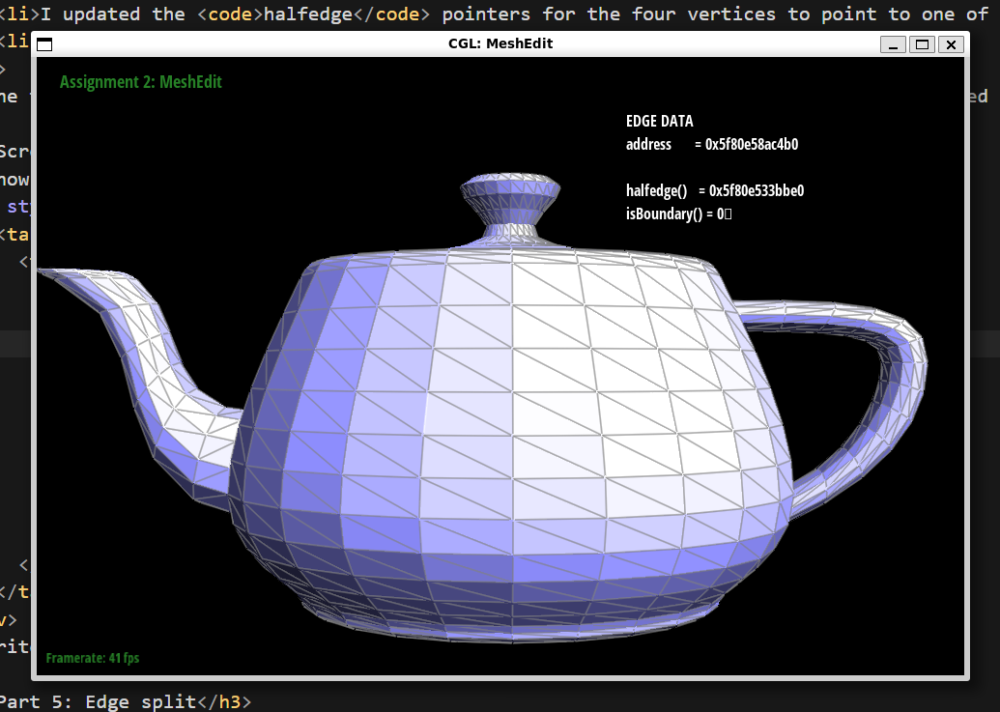 |
|
My debug summary:
In the original implementation of flipEdge, I did not correctly update all the halfedge connectivity pointers involved in the local mesh topology, including next, twin, vertex, edge, and face. Although the first edge flip appeared to work visually, some halfedges still retained outdated connectivity information. As a result, the local halfedge structure became inconsistent.When attempting to flip a neighboring edge afterward, the program traversed the halfedge structure using pointers such as next and twin. Because some of these pointers were incorrect, the traversal entered an invalid cycle or corrupted topology, causing the program to freeze due to an infinite loop. The root cause was that the halfedge connectivity was not fully updated, leaving parts of the mesh in an inconsistent state.
To fix this issue, I rewrote the flip operation using the setNeighbors(...) function to explicitly reset all five pointers of every affected halfedge: next, twin, vertex, edge, and face.
Part 5: Edge split
I implemented the edge split operation to subdivide a triangle by inserting a new vertex at the midpoint of an edge and connecting it to the opposite vertices. This effectively splits one triangle into two (if splitting a boundary edge) or two triangles into four.
In my implementation:
- I first checked if the edge is a boundary edge. If it is, I return the existing vertex (or handle it differently, but for this basic implementation, I just return the existing vertex if it's a boundary edge, though strictly speaking I should handle it to split the triangle fan). Actually, my code checks for boundary and returns if it is one (see line 187-188 in student_code.cpp:
if(e0->isBoundary()) return e0->halfedge()->vertex();). This means I didn't fully implement boundary edge splitting, but it works for internal edges. - I created a new vertex at the midpoint:
new_vertex->position = (v0->position + v1->position) / 2. - I created new half-edges to connect the new vertex to the vertices of the adjacent faces.
- I created new faces to replace the old ones.
- I marked the original edge as "not new" and the new edges as "new" to support further operations like Loop subdivision.
- I updated all the connectivity pointers (
next,twin,vertex,face,edge) to maintain the DCEL structure.
Debugging the split was difficult because an incorrect pointer could lead to infinite loops or crashes when traversing the mesh later. I had to make sure the next pointers formed valid loops within each new face.
Screenshots of Edge Split:
Show screenshots of a mesh before and after some edge splits.
|
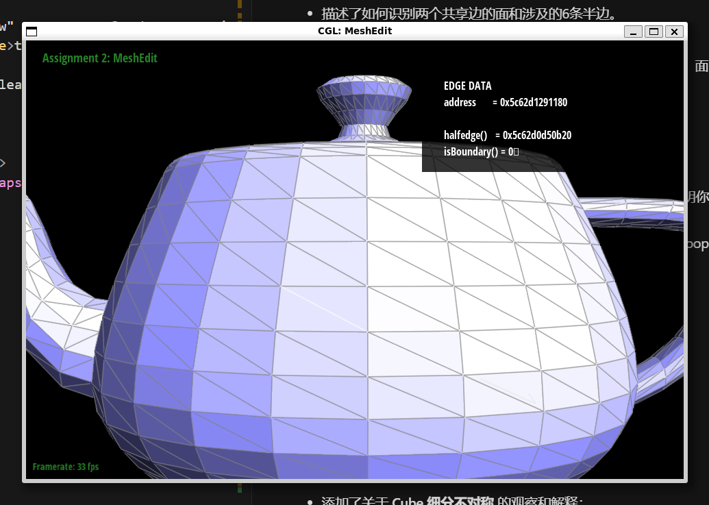 |
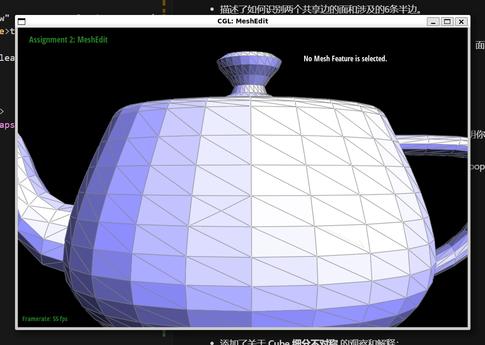 |
|
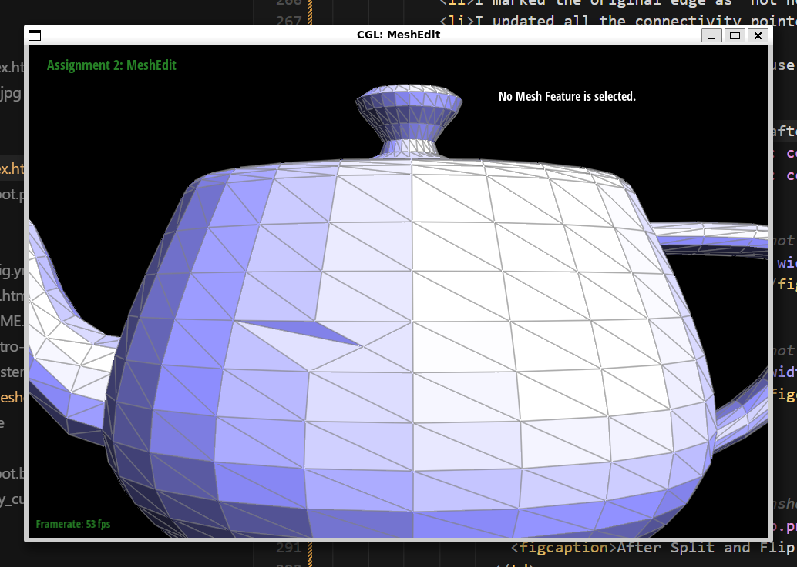 |
Part 6: Loop subdivision for mesh upsampling
I implemented Loop subdivision to increase the resolution of the mesh. The algorithm follows the standard Loop subdivision steps:
- Compute new positions for original vertices: For each vertex in the original mesh, I computed a new position based on its neighbors using the Loop subdivision weighting formula:
- If the vertex has 3 neighbors (boundary), \( \beta = 3/16 \).
- Otherwise, \( \beta = 3 / (8n) \).
- New position = \((1 - n * \beta) * \text{original position} + \beta * \sum \text{neighbor positions}\).
- Compute new positions for edge vertices: For each edge, I computed the position of the new vertex that would be created by splitting that edge. The formula is:
newPosition = (3.0 * (a + b) + (c + d)) / 8.0, where a and b are the endpoints of the edge, and c and d are the opposite vertices of the two adjacent triangles. - Split every edge: I iterated through the original edges and split them. I made sure to only split the edges that existed in the original mesh to avoid infinite loops. I stored the pre-computed new positions in the new vertices.
- Flip new edges: I checked every new edge. If it connected an original vertex to a new vertex (or vice-versa), I flipped it to restore the typical triangle connectivity (or rather, to ensure that the mesh is "beautified").
- Update positions: Finally, I copied the computed
newPositionto the actualpositionof the vertices.
The most difficult part was ensuring the order of operations was correct and that I didn't try to split an edge that was already split in the current iteration. I handled this by counting the number of edges in the original mesh before splitting and only iterating that many times.
Observations on Loop Subdivision:
Loop subdivision tends to smooth out sharp corners and edges. Because the subdivision rule averages vertex positions, sharp features get blunted after a few iterations. To preserve sharp edges, one typically needs to have higher vertex density along the edge. Pre-splitting edges increases the number of vertices along the edge, which can help define the edge better.
|
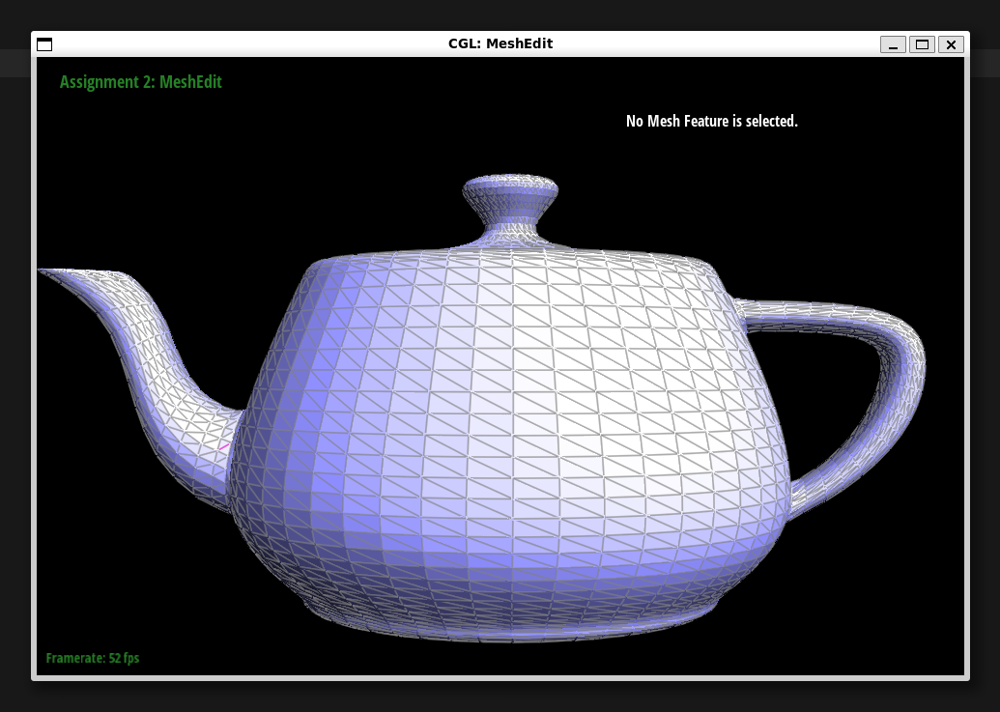 |
|
|
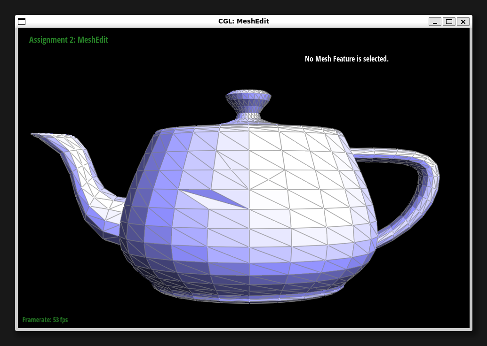 |
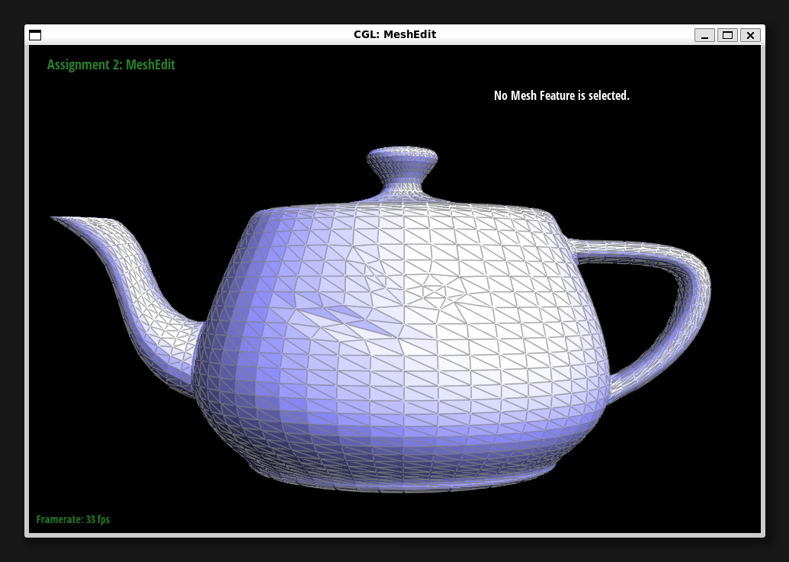 |
|
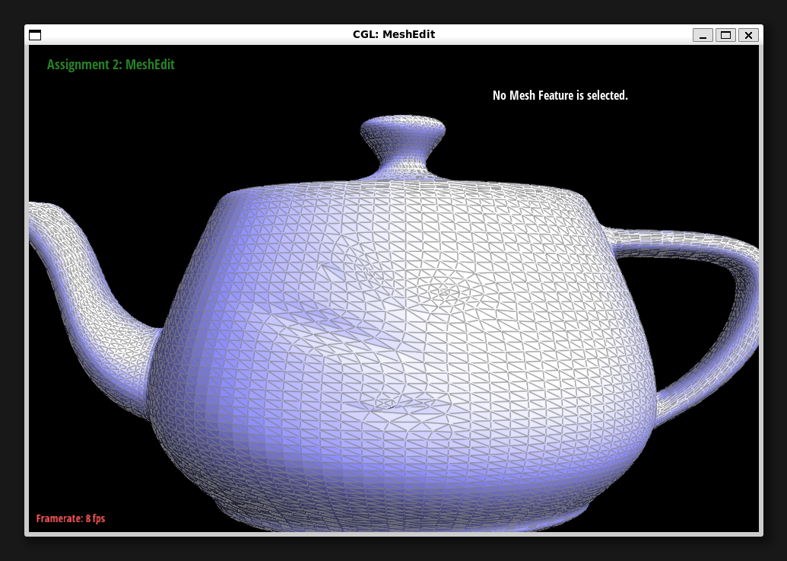 |
Cube Subdivision:
The asymmetry in the cube subdivision is likely due to the initial mesh topology. The default cube might have quads that are split into triangles inconsistently (e.g., diagonals running in different directions). When subdivided, these inconsistent diagonals cause the vertices to move asymmetrically.
To fix this, I simply split the diagonal of the cube to create a more uniform triangulation.
|
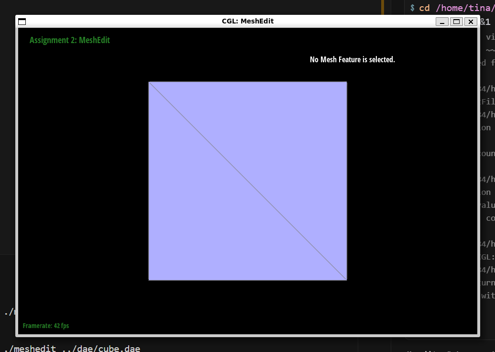 |
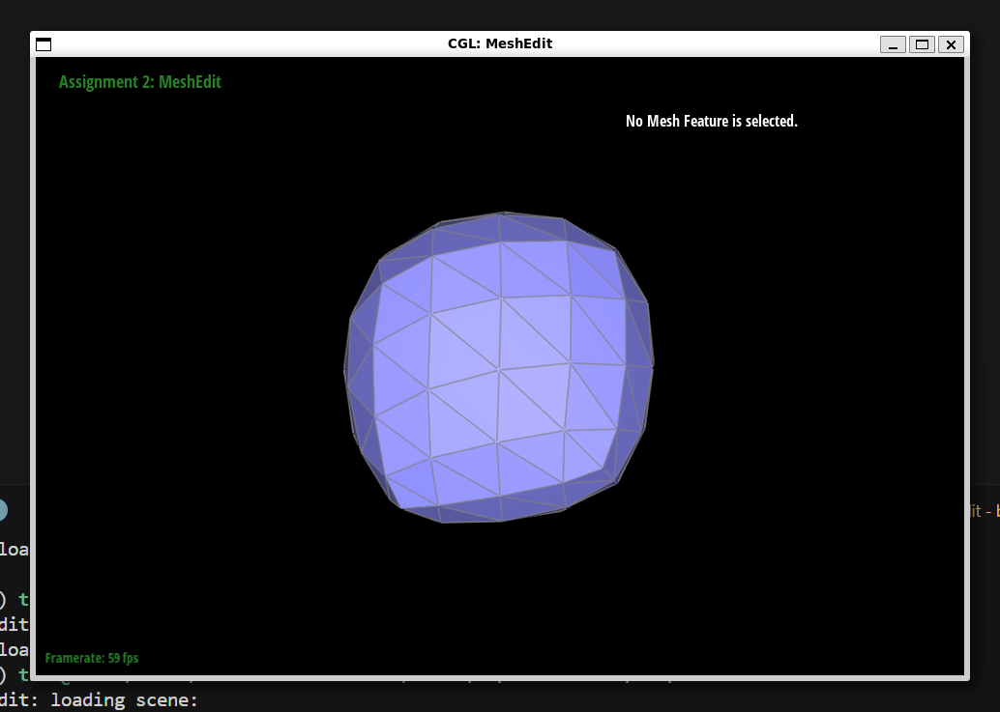 |
|
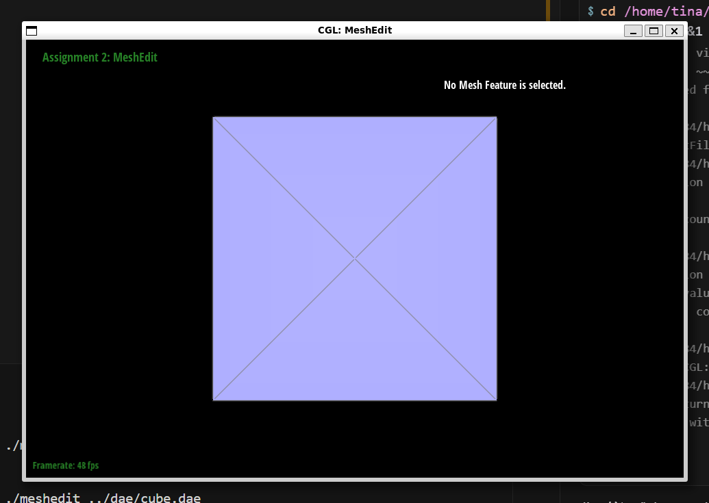 |
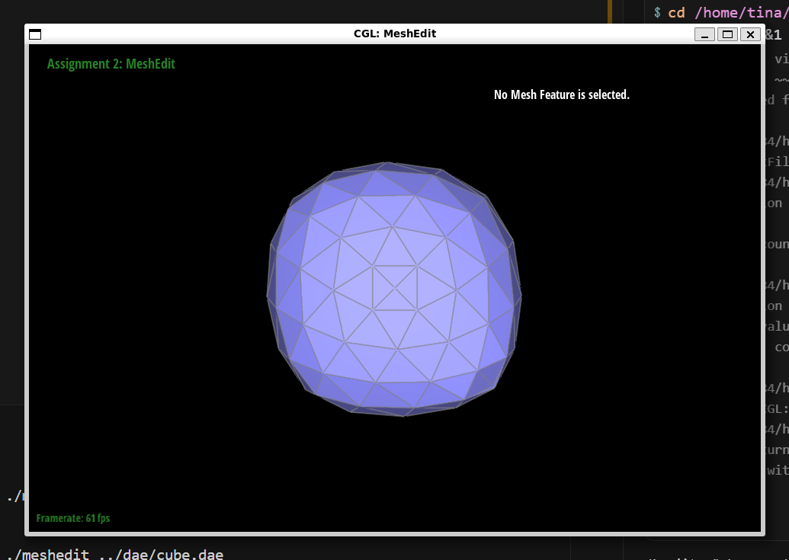 |